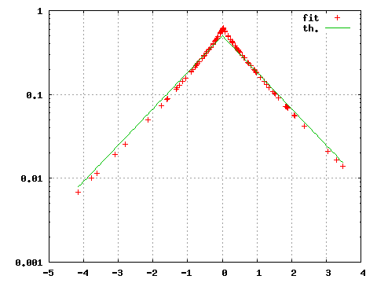
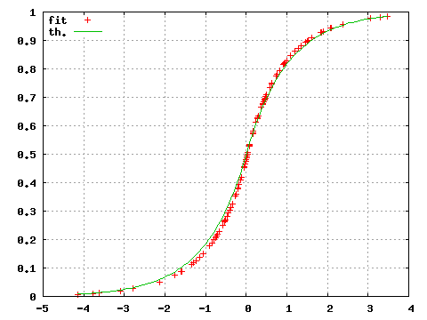
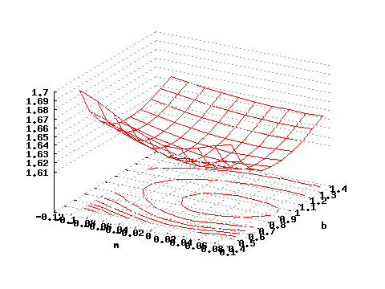
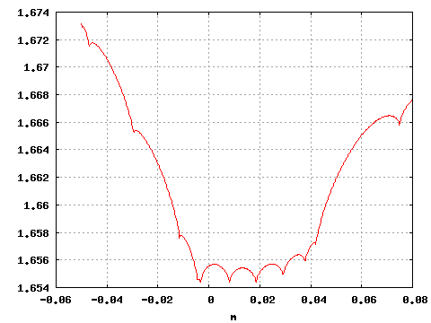

The SUBBOTOOLS package is intended as an help to the use of the Subbotin family of probability densities in a statistical analysis environment.
The package contains various programs for the maximum likelihood estimation of an unknown distribution and for the generation of pseudo random variables. The program subbofit can be used for the "fitting" (estimation) of a Subbotin probability density on an user supplied dataset. The programs subboafit and subbolafit perform this estimation on two larger classes of probability densities: the asymmetric Subbotin densities (a 5 parameter family) and the so called "less-asymmetric" Subbotin densities (a 4 parameter family) (see Overview). The program laplaafit restrict the estimation to the family of asymmetric Laplace densities, a subset of the asymmetric Subbotin.
In addition, the programs subbogen and subboagen can be used to generate pseudo random variates drawn, respectively, form a user-specified Subbotin or asymmetric Subbotin density (see Subbotin Random Variates) while subboshow allows the exploration of the (symmetric) Subbotin log-likelihood function (for a definition see Parameters Estimation) of an user supplied dataset (see Exploring Subbotin Log-Likelihood).
All the programs in this package make use of functions from the GNU Scientific Library, a collection of numerical routines for scientific computing. These libraries must be installed on your system for SUBBOTOOLS to compile and run. More information about GSL can be found at the project home page, http://www.gnu.org/software/gsl/. Follow the instruction provided there to download and install the GSL library.
Using appropriate command line options, the programs subbofit, subboafit, subbolafit, laplaafit and subboshow can be used to produce "pictures". They can produce tabulated data, in ASCII format, representing 1-dimensional curves or 2-dimensional surfaces. The output structure, made of newline separated records of two or tree space separated numeric fields, is in a format suitable to be sent to the common plotting utilities ordinarily found on Unix systems. For instance, I usually use this "graphic" output options in conjunction with Gnuplot or the graph utility found in the plotutils package. For more information on the output format of these programs see Programs Input/Output.
SUBBOTOOLS has been developed on Linux systems. It is freely distributed under the GNU General Public License and is provided “as is” without any explicit or implicit warranty (see License and Copyright). In principle it should work in any flavor of Unix with minor or without modifications. No porting to different OS's has been undertaken nor planned.
The last version of SUBBOTOOLS can be found at http://www.sssup.it/~giulio. Comments and bug reports are welcome. E-write to giulio.bottazzi@sssup.it.
Please read the INSTALL file provided with the package for installation instructions and the file README for an updated description of the package components.
Top
The SUBBOTOOLS package contains the following programs:
All these programs deal, in a way or another, with one of the Subbotin families of densities. The symmetric Subbotin densities depend on three parameters, usually denoted m, a and b. The first parameter, m, represents the density “positioning” parameter, i.e. the position of its “center”. Indeed it is at the same time the mean, the mode and the median of the density. The second parameter, a, is a “scale” parameter, that express the “spread” of the distribution. It is proportional (but in general not equal) to the density standard deviation. The last parameter, b, is a “shape” parameter. It tells how large are the “tails” of the density with respect to its center.
The asymmetric Subbotin densities extend the previous family by introducing two different values for the parameters a and b at the left and at the right of the density mode m. This extended group of densities constitutes a 5 parameters family. The parameters are commonly denoted b_l, b_r, a_l, a_r and m . In this case, the positioning parameter m represent the mode of the density, but it is no longer its mean nor its median.
The asymmetric Laplace family is a subset of the asymmetric Subbotin family obtained putting bl=br=1 .
For a precise definition of the Subbotin, asymmetric Subbotin and asymmetric laplace families The Subbotin Families of Densities. For the estimation of the density that better fits a provided sample different methods can be applied. For a short discussion of the problem Parameters Estimation. The strategy of the estimation procedures implemented in the programs distributed with this package is described in Fitting Subbotin Density.
The program of this package share a common procedure to read in input and print out output. Input is read from standard input in ASCII format and output is sent to standard output, always in ASCII format. For more details, see Programs Input/Output.
The functional form of the Subbotin density is characterized by three parameters, a positioning parameter m, a scale parameter a and a shape parameter b, and reads
f(x;a,b,m) = e^( -1/b | (x-m)/a |^b ) / ( 2 a b^(1/b) \Gamma(1+1/b)) .
Due to its symmetry, the Subbotin density has all central moments of odd order equal to 0. The central moment of order 2l reads
M[2l] = (a b^(1/b) )^(2l) \Gamma( (2l+2)/b ) / \Gamma(1/b)
while the absolute deviation is
M[|1|] = a b^(1/b) \Gamma(2/b) / \Gamma(1/b)
The asymmetric Subbotin density extends the family described above by considering different values for the parameters a and b in the two halves of the density. Its functional form depends on five parameters: a positioning parameter m, two scale parameters a_l and a_r respectively for the values below or above m, and two shape parameters b_l and b_r characterizing, respectively, the lower and upper tail of the density. The functional form reads
/ e^(-1/bl | (x-m)/al |^bl )/A for x<m
f(x;a,b,m)= <
\ e^(-1/br | (x-m)/ar |^br )/A for x>m
where
A = al bl^(1/bl) \Gamma(1+1/bl) + ar br^(1/br) \Gamma(1+1/br)
It is rather straightforward to obtain the expression of the central moments of the asymmetric Subbotin density. They are in general all different from zero, the density being skewed. Since we are not going to make use of the central moments for the asymmetric case, their expressions are not reported here.
The asymmetric Laplace density restricts the family described above by considering fixed values for the tail parameters b_l=b_r=1 . Its functional form depends on three parameters: a positioning parameter m and two scale parameters, a_l and a_r, for the parts of the density below or above m, respectively. The functional form reads
/ e^( -(m-x)/al )/A for x<m
f(x;a,b,m)= <
\ e^( -(x-m)/ar )/A for x>m
where
A = al + ar
Consider a set of N observations {x_1,...,x_N} and assume that they are independently drawn from an unknown Subbotin distribution. We are interested in the estimation of the parameters (a,b,m) of this unknown distribution .
A first approach to this problem, commonly known as method of moments, is based on the comparison between the theoretical moments of the density (see The Subbotin Families of Densities) and the sample moments computed starting from the N observations.
The procedure goes as follows. We compute the sample mean M_0 , the sample variance M_2 and the sample absolute deviation M_|1| . First, we obtain an estimation of the central parameter of the distribution using the sample mean. We set m = M_0 .
Second, we obtain the estimation for the parameter b as the unique root of the equation \Gamma(3/b) * \Gamma(1/b) / \Gamma(2/b) = M_|1| / M_2 and finally the estimated value for the parameter a is given by a = b^(-1/b) \sqrt{ M_2 * \Gamma(1/b) / \Gamma(3/b)} .
A second possible approach consists in the maximization of the empirical likelihood, i.e. in the method generally known as maximum likelihood estimation. More specifically, instead of maximizing the likelihood of the sample, we minimize the negative log-likelihood, computed taking the logarithm of the likelihood function and chancing it sign. Moreover, using the first order conditions is easy to derive the expression of the estimated value of the parameter a as an explicit function of b and m. Substituting this expression in the negative log-likelihood one obtains an object function that depends only on 2 parameters, b and m. We call this function reduced negative log-likelihood and it reads L(a,b) = \log(2b^(1/b)\Gamma(1+1/b)) +1/b + 1/b \log(1/N \sum_{j=1}^N | x_j-m |^b) .
In the case of the asymmetric density, the method of moments is not so attractive. Indeed it is impossible to obtain simple expressions relating the parameters characterizing the density to the various moments of the sample. Then the use of numerical methods becomes mandatory, and one is naturally led toward maximum likelihood estimation. The (negative) log-likelihood (per observation) in the case of asymmetric density reads
L(bl,br,...) = \log(A) + 1/(N bl) \sum_(x_j<m) ( (m-x_j)/al )^bl + 1/(N br) \sum_(x_j>m) ( (x_j-m)/ar )^br
where
A = al bl^(1/bl) \Gamma(1+1/bl) + ar br^(1/br) \Gamma(1+1/br) .
As can be seen, both L(a,b) and L(b_l,b_r,...) are not analytic functions of their arguments. This is way their minimization is a non-trivial task that must be handled with particular care, see Fitting Subbotin Density.
The situation is much easier for the case of the asymmetric Laplace density. Indeed by substituting b_l=b_r=1 in the previous expression one obtains a reduced log likelihood as a sole function of the mean m
L(m)= -2 log( \sqrt(S_l) + \sqrt(S_r) ) -1
where
S_l = (\sum_(x_j<m) m-x_j)/N S_r = (\sum_(x_j>m) x_j-m)/N .
It is also possible to see that this one variable reduced log-likelihood does posses a single global minimum. The optimal parameters a_l and a_r are determined by the relations
a_l = S_l + \sqrt(S_l S_r) a_r = S_r + \sqrt(S_l S_r) .
Both subbofit and subboshow require user supplied data. The data can be read in ASCII format from files whose name are specified at the end of the command line (after any option) or from the standard input. Different data are separated by white characters (spaces or tabs) or newlines. Lines beginning with a fence symbol '#' are considered comments and ignored.
The output of subboshow and the output of subbofit,subboafit,subbolafit and laplaafit whith the options -O 1 or -O 2, are intended to be used to produce pictures. They consist in tabulated data, of 2 (for 2-dimensional plots) or 3 (for 3-dimensional plots) columns, where each line correspond to a different point. In the case of 3-dimensional plots, the triplet associated to different values of the first variable are separated by 2 newlines. This format has been chosen to provide an easy interface to the gnuplot plotting program. The 2-dimensional plots can be easily displayed also making use of the graph utility of the plotutils package. For an example of the use of the "graphic" output Graphic Tutorial.
The gnuplot program FAQ can be found at http://www.gnuplot.info/faq/.
For information about the plotutils package check http://www.gnu.org
This tutorial will drive you across some simple example on the use of the programs provided with this package. The tutorial is divided in two parts. In the first part the use of the programs from the command line will be illustrated. We will learn how to generate pseudo-random variables drawn from a Subbotin density and how to obtain the best Subbotin fit on a given dataset. The second part of the tutorial is more "graphical", and we will see how to use the programs in distributed with SUBBOTOOLS to generate plots inside the Gnuplot plotting environment. Even if I'm not going to assume a previous knowledge of Gnuplot, I will not explain all the details of the different commands that I will use. For more information on the different commands and switches, you are referred to the exhaustive help system of Gnuplot itself (try help after Gnuplot invocation).
Please, understand that the choice of gnuplot as plotting utility is due to my long experience with it, and to its proven reliability and easiness of use. The output of the SUBBOTOOLS programs has been designed according to the gnuplot requirement as illustrated in Programs Input/Output. Due to the essential looseness of these requirements, however, it should be relatively easy to use different utilities.
In this tutorial I'm going to suppose that you are familiar with the Unix shell (command line) interface and that you already installed the SUBBOTOOLS package without problems.
In order to avoid danger to possibly relevant files, before trying the following steps create a new directory, something like subbotest, and move there
mkdir subbotest
cd subbotest
Now that you are in a more or less safe environment, let's start. We begin by generating a meaningful set of numbers to work with
subbogen -N 100 -m0 -a1. -b1. -R 5 > testdata.txt
Let's see the meaning of the previous command. Using subbogen we generated 100 random numbers from a Subbotin distribution with m=0, a=1 and b=1, i.e. a Laplace (symmetric exponential) distribution centered in zero and with variance equal to 2. The numbers are generated initializing the RNG (random number generator) with a seed equal to 5 and are placed in a file named testdata.txt. One can generate independent samples by using the option -R with different integer numbers (the default value for the seed is 0).
The file testdata.txt now just contains a column of 100 number, you can easily inspect it using an editor. We now use this file to investigate the properties of the program subbofit.
We begin with the simplest command
subbofit < testdata.txt
that should generate an output similar to
8.832028e-01 8.777607e-01 2.917261e-02 1.615783e+00
The meaning of these four number is as follows: the first three number represent the estimated values for b, a and m respectively, while the last number is the (negative) log-likelihood associated with these three values. As can be seen, the estimated values for b and a are quite far from the real values. The situation is different for different seeds but with only 100 observations an error of about 10% is not uncommon.
In addition to the maximum-likelihood estimation of the parameters, which is the default, the program subbofit also implements a method of moments. You can choose the method with the command line option -M, try
subbofit -M 0 < testdata.txt
and you should obtain something like
9.569862e-01 9.104554e-01 5.291858e-02 1.617363e+00
In this particular case, the method of moments provides better estimates than the ones obtained via maximum-likelihood. Of course the associated log-likelihood is larger. In order to obtain more details on the procedure of fitting you can use the option -V. For more details Fitting Subbotin Density.
Another interesting feature is the possibility of fitting just the b and a parameters, providing the “true” value of m directly from the command line. This is useful when you work with normalized data whose mean has been previously subtracted. Since this is a quite common situation subbofit provides the -m command line option. With the file generated above do
subbofit -m 0 < testdata.txt
and you should obtain
8.808684e-01 8.777596e-01 0.000000e+00 1.616923e+00
and in this case the variation in the fitted parameters is relatively low.
Now let's start gnuplot and see how the programs in SUBBOTOOLS can be used inside its graphic environment. Simply type
gnuplot
and you will be greeted by a fairly large amount of informations and, finally, a prompt. As a first exercise let's compare the result of our fitting procedure with the original function. Using
gnuplot>set log y
gnuplot>plot "<subbofit -O 2 < testdata.txt",exp(-abs(x))/2
The option -O 2 print for each point of the file testdata.txt the value of the probability density associated with the fitted parameters. gnuplot interprets this output and produces the corresponding graph. With our small sample the obtained estimate is notably different from the theoretical Laplace density from which the data were originally generated.
A similar comparison can be performed on the distribution function using the command
gnuplot>set key top left
gnuplot>unset log y
gnuplot>plot "<subbofit -O 1 <testdata.txt"
gnuplot>replot (x<0?exp(-abs(x))/2:1.-exp(-abs(x))/2)
where the option -O 1 now prints the value of the estimated distribution function for each input points.
The program subboshow is conceived for the visual exploration the Subbotin “reduced” lok-likelihood. For a precise definition Fitting Subbotin Density. The program takes a set of observations and print out the associated value of the Subbotin reduced negative log-likelihood for a grid of b and m values. Using the previously generated observations, try the following
gnuplot>set contour
gnuplot>unset clabel
gnuplot>set grid x y z
gnuplot>splot "<subboshow -b0.5:1.5 -m-.1:.11 <testdata.txt" i 0 w l
and you will obtain a 3D plot representing the negative log-likelihood of the dataset .
If one is interested in the behaviour of the reduced (negative) log-likelihood with respect to a specific parameter it is enough to specify a single point for the other parameter. For instance, if one is interested in the behavior of the function with respect to the parameter m keeping fixed the value of b, one can use
gnuplot>plot "<subboshow -b0.5 -B 1 -m-.05:.08 -M 500 <testdata.txt" i 0 w l
and obtain a 2D plot .
The options -b and -m set the region for which points are generated while -B and -M set the number of points. See the help of subboshow for more options.
Using this command, you can check if the parameters values previously found with subbofit do in fact constitute a minimum.
 |
 |
| Figure 1: Estimated (fit) and theoretical (th) probability density. |
Figure 2: Estimated (fit) and theoretical (th) probability distribution.
|
 |
 |
| Figure 3: Negative reduced log-likelihood as a function of m and b. |
Figure 4: Negative reduced log-likelihood as a function of b.
|
The programs subbogen and subboagen can be used to generate pseudo random variables drawn, respectively, from a Subbotin and an asymmetric Subbotin density.
subbogen generate a sequence of pseudo-random variables from a Subbotin density and print them to standard output, in ASCII format, separated by a newline character. The parameters of the density can be specified as option on the command line or can be read from standard input.
Usage: subbogen [options]
where [options] can be
subboagen generate a sequence of pseudo-random variables from an asymmetric Subbotin density and print them to standard output, in ASCII format, separated by a newline character. The parameters of the density can be specified as option on the command line or can be read from standard input.
Usage: subbogen [options]
where [options] can be
The programs subbofit and subboafit try to find the Subbotin density or the asymmetric Subbotin density that better fit a user-supplied dataset. These programs obtain their estimation via numerical minimization of the reduced (negative) log-likelihood (see Parameters Estimation).
The program subbolafit fit the same asymmetric Subbotin density fitted by subboafit, but in the particular case in which the two scale parameters are set equal, i.e. a_l=a_r .
Due to the non-analytic nature of the Subbotin log-likelihood function, both in the symmetric and asymmetric case, a straightforward minimization of that function can result dangerous. Instead, the programs use a multi-steps approach.
In the symmetric case, subbofit obtains a first guess of the parameters values using the method of moments. Then it refines this first guess performing an unconstrained minimization of the log-likelihood function. Finally it splits the minimization procedure inside different sub-domains whose interior constitute an analyticity region for the log-likelihood function and that together constitute a neighborhood covering of the previously found values. By comparing the various local minima in these domains, the program finds the global minimum. Let's analyze the procedure in more details.
The first step of the fitting procedure consists in the estimation of the values of the parameters based on the method of moments, i.e. using the sample mean M_0 , the sample variance M_2 and the sample absolute deviation M_|1| and following the procedure outlined in see Parameters Estimation. Let (b_0,a_0,m_0) be the parameters values obtained with the method of moments.
In the second step we run an unconstrained minimization procedure on the reduced negative log likelihood function L (see Parameters Estimation), using as starting point the couple (b_0,m_0) previously determined with the method of moments.
In the case in which the value of m is provided on the command line (using the option -m, see subbofit) the search for the minimum is reduced to a one dimensional problem. Moreover, in this case the function L is always analytical and the unconstrained minimization solve the problem finding the global minimum.
In general, when the value for m is not provided, due to the non-analyticity of the object function, the unconstrained minimization procedure does not generate reliable results and it is simply used as a first rough estimate of the solution. Denote with (b_1,a_1,m_1) the set of values obtained with the present procedure.
If b<1 the reduced (negative) log-likelihood function L becomes not differentiable when m=x_j for j in {1,...,N} i.e. when the parameter m takes the value of one of the observations.
The method of Interval Constrained Minimization try to overcome this problem by evaluating the function L only in domains where it is analytical. More specifically, one searches for the minimum inside any compact interval [x_j,x_(j+1)] . In this way a list of local minima, one for each interval, is produced. The minimization inside each interval is performed on a “smoothed” version of L obtained with a change of variables, in such a way that the first derivative results well defined but the number and location of minima remains unaffected. Once the local minima are computed inside all the intervals, the local minimum associated with the smallest value of the function L constitutes the global minima, i.e. the point one was looking for.
The algorithm actually implemented does not apply this straightforward procedure, because the execution of a constrained minimization problem for each interval can become too expensive when the size of the sample increases. Instead, a search algorithm is implemented on the set of these intervals. Initially the minimization problem is solved on a small group of intervals surrounding the point m_1 . This initial set is enlarged progressively if new global minima are found. When for a given number of steps no new global minima appear, the search is stopped.
In the asymmetric case it is impossible to implement a simple and direct approach for the density estimation based on the method of moments. Even if the method is still valid in principle, its application requires the solution of a 5-dimensional system of non-linear equations. This strongly reduces its attractiveness as a first guess generator.
Another difference with respect to the symmetric case is the practical inconvenience of reducing the number of variables in the log-likelihood function. Indeed, in the asymmetric case it is again possible to use suitable first order conditions to remove the explicit dependence of the log-likelihood function on some variables, namely al and ar. However, this method would lead to an expression for the reduced log-likelihood that, despite the reduction of the number of independent variables form 5 to 3, appears extremely complicated and computationally more demanding.
For the above reasons, in order to obtain the asymmetric Subbotin fit, the program subboafit starts with an unconstrained minimization of the log-likelihood function over all its 5 parameters (for the expression of the log-likelihood function see see The Subbotin Families of Densities). Then the programs proceeds with an interval-constrained minimization, similar to the one performed by subbofit, whit the parameter m limited inside a compact interval formed by two consecutive observations of the dataset See Minimization on Intervals. A search algorithm is implemented on the local minima found inside these intervals to find the global minimum.
For the asymmetric Laplace a global maximization of the reduced, one paramter, log-likelihood to find the value of the parameter m. The parameters a_l and a_r are then computed using the formula provided in see Overview.
subbofit fits a Subbotin density on a set of data provided as standard input. The method used to estimate the density parameters and the ouput format can be set with command-line options.
Usage: subbofit [options list] [files list]
where [files list] is a list of files containing the observations on which the density is estimated. If [files list] is empty, the program reads the data from standard input. The possible options in [options list] are
The parameters of the numerical optimization are set using a comma separated list of 5 parameters. Empty fields leave the default unchanged. The meaning of the various parameter is as follows:
subboafit fits an asymmetric Subbotin density on a user supplied set of data. The ouput format can be set with command-line options.
Usage: subboafit [options list] [files list]
where [files list] is a list of files containing the observations on which the density is estimated. If [files list] is empty, the program reads the data from standard input. The possible options in [options list] are
The parameters of the numerical optimization are set using a comma separated list of 5 parameters. The meaning of the parameters and the syntax is the same as for subbofit (see subbofit)
subbolafit fits a (less) asymmetric density on a user supplied set of data. The less asymmetric density is the asymmetric Subbotin density (see The Subbotin Families of Densities) with the two scale parameters equal, al=ar The ouput format can be set with command-line options.
Usage: subbolafit [options list] [files list]
where [files list] is a list of files containing the observations on which the density is estimated. If [files list] is empty, the program reads the data from standard input. The possible options in [options list] are
The parameters of the numerical optimization are set using a comma separated list of 5 parameters. The meaning of the parameters and the syntax is the same as for subbofit (see subbofit)
laplaafit fits an asymmetric Laplace density on a user supplied set of data. The asymmetric Laplace density is a special asymmetric Subbotin density (see The Subbotin Families of Densities) with the two tail parameters equal to one. The ouput format can be set with command-line options.
Usage: laplaafit [options list] [files list]
where [files list] is a list of files containing the observations on which the density is estimated. If [files list] is empty, the program reads the data from standard input. The possible options in [options list] are
The parameters of the numerical optimization are set using a comma separated list of 5 parameters. The meaning of the parameters and the syntax is the same as for subbofit (see subbofit)
The possibility of visually explore the reduced negative log-likelihood of a given dataset becomes very useful when the fitting program produces some error and you want to directly verify if the found minima is actually the global minima you were looking for. The program subboshow provides an easy way of performing such a graphical exploration. It is essentially intended to be used inside the gnuplot graphic environment. The format of the output has been conceived to be sent to gnuplot's plot or splot commands. For an example of use See Graphic Tutorial.
The program subboshow allows the visual exploration of the Subbotin reduced (negative) log-likelihood of an user-supplied dataset.
Usage: subboshow [options list] [files list]
where [files list] is a list of files containing the observations with which the log-likelihood is computed. If [files list] is empty, the program reads the data from standard input. The possible options in [options list] are
You require the GSL (Gnu Scientifi Library) to be present on your system in order to install SUBBOTOLS. Check that these libraries are properly installed on your system before proceeding to the installation of the present package. For informations about GSL, including installation instructions, check http://www.gnu.org/software/gsl/.
SUBBOTOLS comes with a configure program in the GNU style. Installation can be as simple as
tar xvzf subbotools-[version].tar.gz
cd subbotools-[version]
./configure
make
make install
where [version] stands for a number indicating the package
version.
The commands above install the SUBBOTOLS executable in /usr/local/bin and the documentation, in the form of info files, in /usr/local/info.
To obtain pdf or html version of the manual, after the configuration, do
cd doc
make pdf
make html
For more detailed installation instruction see the file INSTALL.
SUBBOTOOLS is copyright © 2002-2003 Giulio Bottazzi.
SUBBOTOOLS is a collection of free software; you can redistribute it and/or modify it under the terms of the GNU General Public License as published by the Free Software Foundation; either version 2 of the License, or (at your option) any later version.
This package is distributed in the hope that it will be useful, but WITHOUT ANY WARRANTY; without even the implied warranty of MERCHANTABILITY or FITNESS FOR A PARTICULAR PURPOSE. See the GNU General Public License for more details.
You should have received a copy of the GNU General Public License along with this package; if not, write to the Free Software Foundation, Inc., 59 Temple Place, Suite 330, Boston, MA 02111-1307 USA. You can also find the GPL on the GNU web site.
In addition, I kindly ask you to acknowledge SUBBOTOOLS and its author in any program or publication in which you use SUBBOTOOLS. (You are not required to do so; it is up to your common sense to decide whether you want to comply with this request or not.)